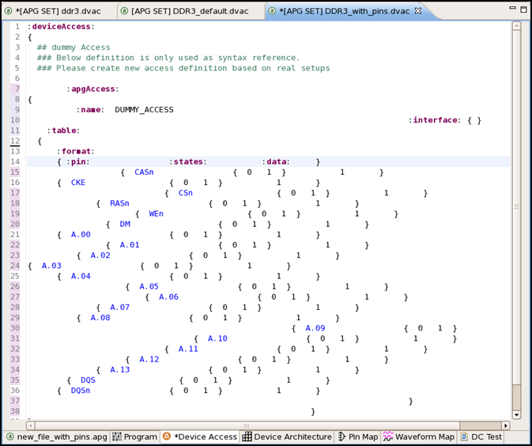
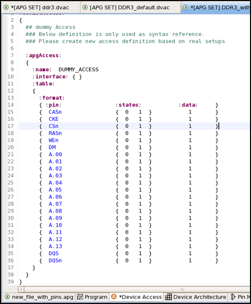

Auto indentation in setup files
MTP supports auto indentation for the selected lines, part of code, or entire file content in the MTP Editor.
In the MTP Editor, select the lines or entire content to be indented and then press "Ctrl + I".
Example
Lines of code in a device access file may look similar to the following one before you use this feature.

The file content looks similar to the following one after all the lines have been automatically indented.

Functional changes
- Introduced in MTP 3.4.0